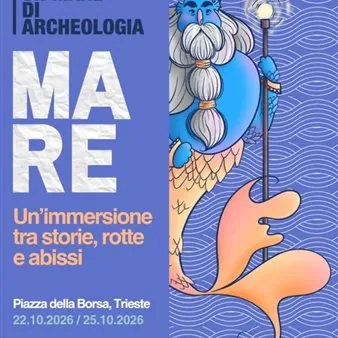

da gio 22 ott a dom 25 ott
Una mare di archeologia
Un’immersione tra storie, rotte e abissi: torna a Trieste la nuova edizione di Un Mare di Archeologia! Dal 22 al 25 ottobre Piazza della Borsa si trasforma in un punto d’incontro per esplorare il passato attraverso conferenze, laboratori e percorsi aperti a tutti. Ci vediamo in…
 Indicazioni
Indicazioni
- Costi e prenotazioni
- Costo non indicato · Prenotazione non indicata
- Programma
- Programma da verificare. Apri la fonte ufficiale per orari e possibili aggiornamenti.
- In caso di maltempo
- Nessuna indicazione specifica pubblicata.
- Note
- Acquisito automaticamente dalla fonte.
L’EVENTO
Descrizione completa
Un’immersione tra storie, rotte e abissi: torna a Trieste la nuova edizione di Un Mare di Archeologia!
Dal 22 al 25 ottobre Piazza della Borsa si trasforma in un punto d’incontro per esplorare il passato attraverso conferenze, laboratori e percorsi aperti a tutti.
Ci vediamo in piazza.
GIOVEDI 22 OTTOBRE
ORE 15.00 Apertura alla cittadinanza e workshop pratici. Lo stand apre le porte al pubblico con attività continue e ad accesso libero. Nel pomeriggio si tengono tre workshop tematici della durata di due ore condotti da esperti per mettersi alla prova con tecniche manuali storiche.
ORE 20.00 «Relitti dell'Alto Adriatico in 3D: rilievo, modellazione e valorizzazione dei fondali tra Trieste e l'Istria»
Un viaggio attraverso il rilievo tridimensionale e la fotogrammetria subacquea per la documentazione dei relitti storici nell'Alto Adriatico. Dai modelli digitali realizzati da Holger Buss ( Baron Gautsch , torpediniera TA-35 / Giuseppe Dezza e piroscafo Gilda ) ai rilievi curati dal relatore sulle testimonianze belliche del Golfo (il sommergibile tascabile Molch a Sistiana e i resti del Cant Z. 506 B a Portorose). Relatore Danijel Grmek Associazione Marinara Aldebaran -
ORE 21.00 Ospite speciale Roberto Giacobbo Giornalista, autore televisivo e conduttore
«Raccontare il passato: giornalismo, storia e divulgazione» Volto tra i più noti e amati della divulgazione culturale e televisiva italiana, Roberto Giacobbo condivide il dietro le quinte del suo mestiere in una conversazione aperta con il pubblico. Un confronto su come il rigore delle fonti storiche e archeologiche possa dialogare con il linguaggio giornalistico e la narrazione multimediale, trasformando la ricerca sul campo in un racconto accessibile, rigoroso e capace di appassionare più generazioni. VENERDI 23 OTTOBRE
ORE 15.00 Stand aperto al pubblico
Un pomeriggio di scoperta accessibile a tutta la cittadinanza: grandi, ragazze e ragazzi possono esplorare liberamente le postazioni didattiche, osservare strumenti e reperti storici, confrontarsi con gli esperti e partecipare alle dimostrazioni interattive sul patrimonio sommerso.
ORE 20.00 «Le rotte commerciali di Trieste nel medioevo»
Durante tutto il medioevo e fino all'apertura del porto franco nel Settecento, l'economia commerciale di Trieste non si fondava sugli scambi marittimi, ma seguiva piuttosto le rotte dell'entroterra. La città importava grano ed esportava vino, sale ed olio verso il Friuli, l'Austria e la Carniola, cercando di controllare le strade tra l'Adriatico e l'interno.
Relatore Dott. Filippo Vigini dialoga con Francesco Nicosia (@storiaditrieste)
SABATO 24 OTTOBRE
ORE 9.00-13.00 E 15.00-20.00
Il cuore del festival: attività no stop. La piazza si anima per tutta la giornata di sabato con postazioni aperte, ricostruzioni storiche, dimostrazioni pratiche e laboratori continuativi accessibili a grandi e piccoli. Un percorso dinamico per conoscere da vicino l'archeologia e il passato marinaro.
ORE 20.00 SERATA ARCHEOLOGIA
speciale Antico Egitto - Pasquale Barile - Dir. rivista «Antico Egitto» Non solo piramidi e monumenti: una serata per esplorare l'Antico Egitto nella sua dimensione più viva. Dalle rotte commerciali e dai traffici lungo il Nilo fino alla vita quotidiana, alla religione e ai cantieri archeologici.
Presentazione volume
Louis Godart «Micenei e Ittiti» (Einaudi 2025)
Un volume che propone un'analisi congiunta delle due civiltà, dalle origini al confronto per il controllo di Mileto e Troia, fino alla grande crisi del XIII secolo a.C. che ne causò la dissoluzione.
DOMENICA 25 OTTOBRE
ORE 9.00 Mattinata conclusiva con lo stand aperto e liberamente accessibile al pubblico. Tornano i tre laboratori operativi condotti da esperti per sperimentare in prima persona le arti della calligrafia, dell'incisione e del modellismo storico.
ORE 15.00 Sblocca la storia - Un intero pomeriggio per vivere il passato attraverso il gioco intelligente: tavoli dimostrativi, wargame storici tridimensionali, simulazioni e giochi da tavolo aperti a chiunque voglia mettersi alla prova. Accesso libero, con la possibilità di riservare il posto alle sessioni strutturate.
L'ingresso alle conferenze è libero fino ad esaurimento dei posti.
Per partecipare ai laboratori i posti sono limitati ed è consigliata la prenotazione sul sito
IL PROGRAMMA
Programma e orari
Appuntamenti raccolti dalle fonti elencate. Dove manca un orario, non è ancora disponibile in questa scheda.
Programma pubblicato
- ORE 20.00 «Relitti dell'Alto Adriatico in 3D: rilievo, modellazione e valorizzazione dei fondali tra Trieste e l'Istria»
- ORE 21.00 Ospite speciale Roberto Giacobbo Giornalista, autore televisivo e conduttore
- ORE 15.00 Stand aperto al pubblico
- ORE 20.00 «Le rotte commerciali di Trieste nel medioevo»
- ORE 9.00-13.00 E 15.00-20.00
- ORE 20.00 SERATA ARCHEOLOGIA
INFORMAZIONI UTILI
Prima di partire
- Controllare la fonte prima di partire.
ORGANIZZAZIONE